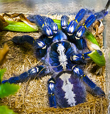

Poecilotheria metallica (металлический древесный паук) — вид древесных пауков семейства пауков-птицеедов (Theraphosidae). Является одним из самых ярко окрашенных пауков-птицеедов.
Находящийся на грани исчезновения вид пауков с юго-востока Индии.

Образ жизни
Poecilotheria metallica птицеед древесный, предпочитает селиться на старых деревьях, где живёт группами. Взрослые особи обустраивают себе гнезда в дуплах и кронах на вершине деревьев, молодые паучки обживают подножия и даже иногда норы под деревьями. Питаются главным образом насекомыми. Охотятся по ночам. Изредка может наблюдаться каннибализм, особенно при слишком тесном сожительстве. Это нужно учитывать при содержании в неволе.